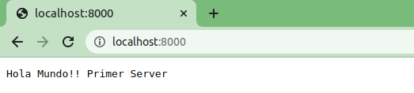

Gracias a Node, JavaScript pasa de ser un lenguaje que hasta ahora solo se había usado en los navegadores para renderizar páginas web, a un lenguaje multiplataforma con el que se puede hacer de todo (de hecho también hay herramientas para crear apps móviles multiplataforma).
- Velocidad (se ejecuta en el motor JS de Google)
- Paradigma de E / S sin bloqueo.Transmisión de datos (solicitudes y respuestas HTTP como un solo evento)
- Mismo lenguaje (javascript), tanto en el cliente como en el servidor.
- Consultas de bases de datos unificadas (formato JSON).
- Codificación fácil y rápida.
- Buena gestión de paquetes gracias a NPM (y Yarn).
- Capacidad del servidor proxy.
- Ciclos de desarrollo rápidos.
- Lógica de negocio en el servidor.
GESTOR NPM
npm es un gestor de paquetes de Node.js con él los desarrolladores pueden crear, compartir
y reutilizar desde módulos o pequeñas librerías, hasta aplicaciones completas de un
extenso catálogo gestionado por la comunidad.
Cuando se instalan nuevos paquetes desde el comando npm, se hace de forma local en
nuestro proyecto dentro de la carpeta /node_modules, pero también se puede instalar de
forma global si fuese necesario.
Por defecto ya vienen instalados varios módulos (módulos nativos).
Con este comando instalaremos los módulos que se incluirán como dependencias en el
fichero 'package.json'.
npm install [nombre_modulo] --save
Con la opción de --save indicamos a npm que guarde el nombre del módulo en la sección de
dependencias del 'package.json' además de instalarlo.
Package.json Cuando inicializamos el gestor npm npm init tendremos automáticamente también el fichero package.json donde se definen las características principales y las dependencias de nuestro proyecto con respecto a otras aplicaciones y librerías. Dentro de él se definen características cómo:
- Nombre del proyecto
- Versión
- Dependencias
- Autores
- Licencias
- Script
- ...
En este primer proyecto crearemos un servidor que al inicialiarlo en el puerto 8000 nos enviará a un página web donde se léa Hola Mundo!!
Teniendo en cuenta:
response.writeHead --> propiedad incorporada del módulo 'http' que envía un encabezado de respuesta a la solicitud.
El código de estado es un código de estado HTTP de 3 dígitos , como 404. El último argumento,
los encabezados, son los encabezados de respuesta.
response.end() --> es una interfaz de programación que se usa para enviar la señal al servidor de que se ha ennviado
todo el encabezado.

Una vez nos metemos en localhost:8000 obtenemos
- Netflix
- Paypal
- Uber
- Ebay